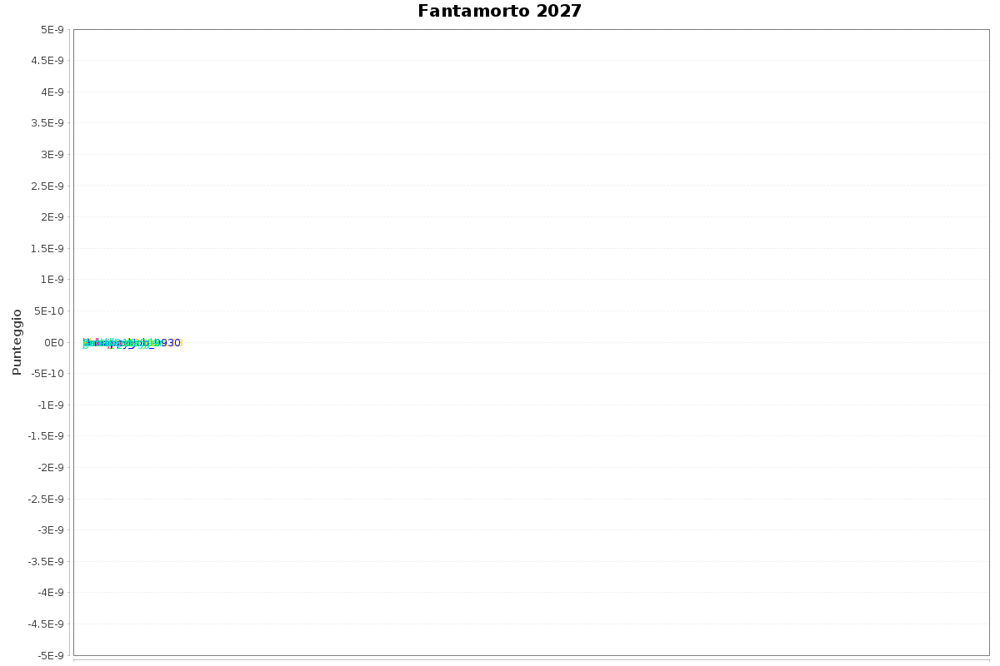

Statistiche
Utenti iscritti: 22
Atleti in gara: 59
Età media atleti: 81.83
Nazioni rappresentate: 17
Occupazioni distinte: 27
Generi distinti: 3
Atleti più vecchi:
- 100 anni - Dick Van Dyke
- 97 anni - Imelda Marcos
- 96 anni - Clint Eastwood
- 96 anni - Liliana Segre
- 95 anni - William Shatner
- 93 anni - Yōko Ono
- 92 anni - Cesare Previti
- 92 anni - Renée Richards
- 92 anni - Sophia Loren
- 92 anni - Wole Soyinka
Atleti più giovani:
- 38 anni - King Charles
- 54 anni - Ben Sasse
- 57 anni - Michael Schumacher
- 64 anni - Nicolás Maduro
- 64 anni - Shaun Ryder
- 68 anni - Salvatore Cuffaro
- 69 anni - Rodolfo Laganà
- 71 anni - Bruce Willis
- 72 anni - Masoud Pezeshkian
- 73 anni - Xi Jinping
Atleti più gettonati:
- 5 teams: Donald Trump
- 4 teams: Mina
- 3 teams: Adriano Celentano
- 3 teams: Bruno Vespa
- 3 teams: Liliana Segre
- 3 teams: Pippo Franco
- 3 teams: Vittorio Sgarbi
- 2 teams: Bruce Willis
- 2 teams: Giuliano Ferrara
- 2 teams: Lino Banfi
Compleanni di oggi:
Prossimi compleanni:
- 2026-12-06 Paolo Berlusconi
- 2026-12-09 Judi Dench
- 2026-12-13 Dick Van Dyke
- 2027-01-03 Michael Schumacher
- 2027-01-06 Adriano Celentano
† Cimitero:
Unicità squadre:
(punteggio indicante quanto una squadra usa atleti poco o per nulla presenti in altre squadre)
- Bartopedia: 145
- pilatoponzio15: 132
- Electrical-Drink-183: 127
- MaDeVi55: 123
- godzillante: 107
- Fkappa: 104
- JustSomebody56: 51
- moraleveryhigh: 20
- Tod777777: 13
- enne_instagram: 7
- Unhappy_Job_9930: 5
- msx: 5
- sarvaego: 0
- CamelSmuggler: 0
- doctor_sus593: 0
- D3luX82: 0
- PRISONER_709: 0
- Gelati09: 0
- kukujojo: 0
- Wasteland825: 0
Bot uptime: 138d 3h 2m 56s
Aggiornato: 2026-11-26 12:06:00